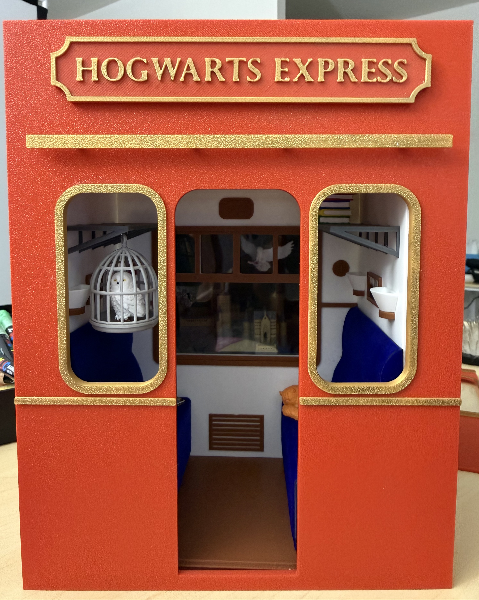
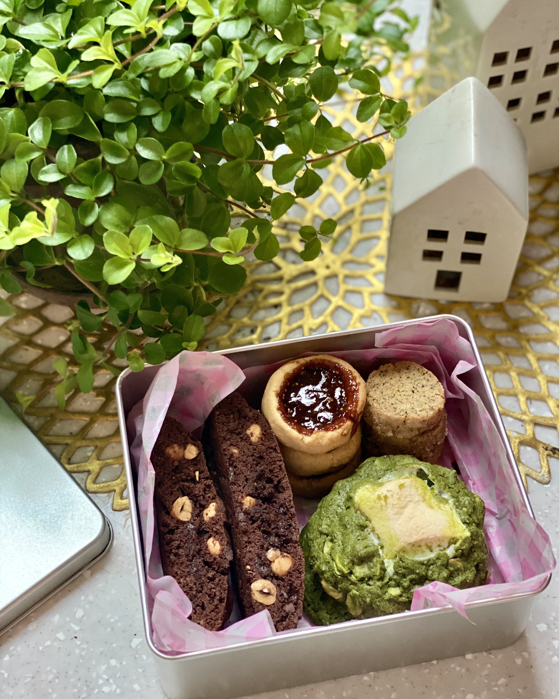
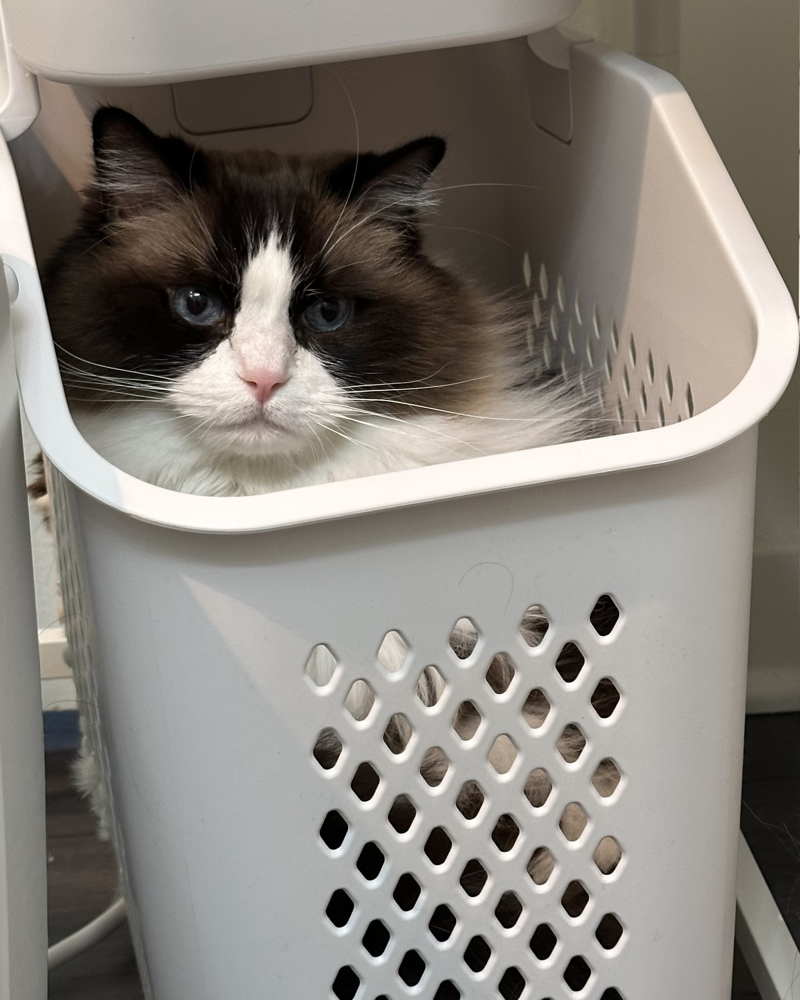

Research Professional at UChicago Booth
I am a Research Professional at the University of Chicago Booth School of Business, working with Professors Giovanni Compiani and Avner Strulov-Shlain. My research focuses on product differentiation, behavioral economics, and industrial organization, with applications in grocery and digital markets.
I am particularly interested in how firms strategically use product attributes—such as "sugar-free" or "organic" labels—to differentiate offerings and extract price premiums, and how consumer willingness to pay for these features varies across categories and demographics. Methodologically, I use structural econometrics, causal inference, and machine learning to analyze both traditional and unstructured data sources.
The University of Chicago
September 2024 – March 2025
Purdue University, West Lafayette, IN
August 2022 – May 2024
Korea University, Seoul, South Korea
March 2017 – August 2022
Financial Engineering Interdisciplinary Program. Coursework in Mathematics, Economics, Business, and Industrial Engineering.
Research Professional at University of Chicago Booth School of Business (July 2024 – Present), working with Professors Giovanni Compiani and Avner Strulov-Shlain.
Built estimation pipeline for mixed logit models with random coefficients using MLE. Applied PCA to reduce dimensionality of text and image embeddings from deep learning models (VGG19, ResNet50, USE). Performed model selection using AIC with robustness checks via BIC and cross-validation.
Processed Nielsen scanner data to identify suitable product categories. Integrated Syndigo data for nutritional information. Constructed consumer choice panels and calculated price elasticities using developed econometric framework.
Developed data processing pipeline for Nielsen data to classify meat and alternative meat products. Engineered hedonic price indices using fixed effects regression. Constructed balanced household-week panel (4.9M observations) for demand estimation.
Refactored estimation pipeline to xlogit library. Performed structural demand estimation using naive and flexible logit methods with 500 bootstrap replications across multiple robustness specifications to test consumer price inattention.
Organized and documented full replication package by verifying all results through re-running GRF models (multi-arm causal forests and survival forests), Tobit regressions, supply-curve estimations, and counterfactual simulations.
Engineered robust data pipeline to process ~1.4TB unstructured Skupos streaming data on Mercury/SLURM. Built comprehensive analytical panels and implemented multi-arm causal forest to estimate heterogeneous treatment effects of cash discounts on store revenue.
Built interactive trading platform in Qualtrics using custom JavaScript with real-time portfolio management, dynamic price updates, trade validation, and comprehensive state persistence. Engineered experimental design to measure default effects and self-attribution.
Cleaned GPS data of the Chicago Metropolitan Area and integrated theater geolocation coordinates with daily screening schedules. Performed difference-in-differences analysis to compare mobility patterns, investigating the effect of film exposure on post-viewing movement behavior.
When I'm not analyzing data or running models, here's what I enjoy!
Zermatt, Switzerland (2023)
Kjeragbolten, Norway (2022)

Hogwarts Express Book Nook for a Harry Potter fan

Sharing baked goods with people I love!

Sunsoo is 7 years old Ragdoll.
I'm always open to discussing research, collaborations, or opportunities.